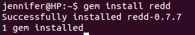

Intro paragraph
Please note, I'm using my Linux operating system (Ubuntu) so some of the commands might be different for you, depending on what operating system you're using.
First, make sure you have Ruby installed. You can learn how to do that here. In this tutorial we'll be using the command line, so it's best to keep your files for this project in their own folder.
Before we get started, we need to make a Reddit account for our bot. You can do that here, it's pretty simple. The only thing we'll need to authenticate the bot is our username and password.
Next, make a file in your project folder with the ".rb" file extension. The one I'll be using will be called "bot.rb". For this project, we'll be using the Redd Gem, so type "gem install redd" into your command line.
Next, open up your ruby file in your editor. Since we need to use the Twitter Gem in our program, we have to require it before we do anything else.
Questions? Comments? Don't hesitate to contact me!